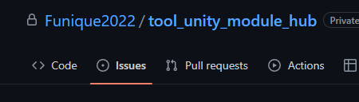
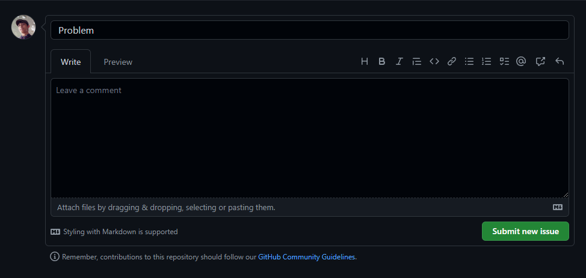

Funique 文件指南 For 使用者 在這篇中, 你會看到如何架設 Unity 專案 繼承框架邏輯, 編寫自定義元件\ 如果找到 bugs 可以找到指定的 repo 並且在 issue 回報問題  寫下你的問題, dev 會嘗試改善  架構 Funique 專案有幾個規則套用 在開始以前, 建議先閱讀 這篇 Note 有些模組是通用型的, 可以被套用在伺服器或客戶端. 專案一覽 工具快速開始 客戶端快速開始 伺服器快速開始